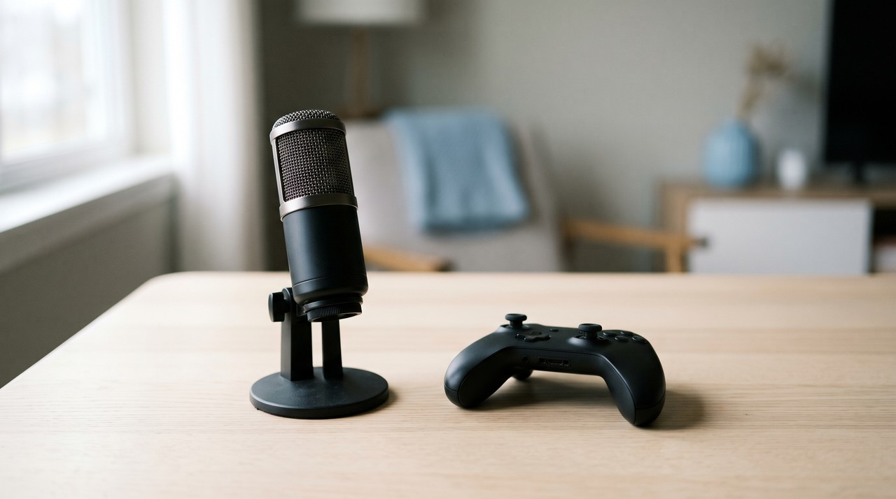
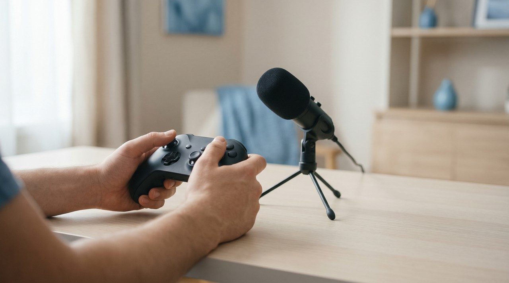
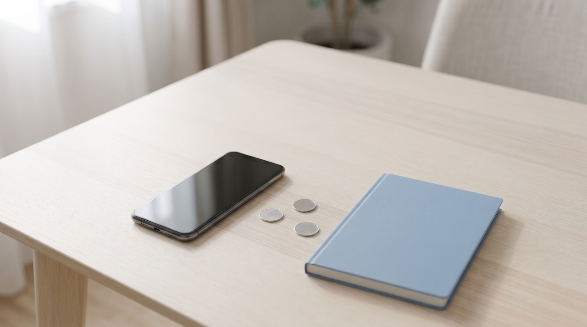

GTA 6 ways to make money from Pakistan: what really pays, and why your own voice matters

If you live in Pakistan, YouTube is the one major platform that can pay you for GTA 6 video views. You can only get paid after you reach 1,000 subscribers and either 4,000 watch hours or 10 million Shorts views. TikTok rewards are closed here, and Rockstar's written rules do not give you permission to earn money from game footage, even though many people do it. YouTube wants gaming videos that teach something, so adding your own voice to explain the play is what matters.
| Way to earn | Open if you live in Pakistan? | What it really pays | The catch |
|---|---|---|---|
| Raw clips on TikTok, Facebook or Instagram | TikTok no, Facebook not reported as open, Instagram no open view payout found | Nothing from the platform | You can still grow an audience, but views alone do not pay |
| YouTube with your own commentary | Yes, standard tier only | Ad money after you qualify | Rockstar gives no permission to earn from footage |
| Clipping campaigns | Whop lists Pakistan for payouts | About $1 per 1,000 approved views | Budgets run out, and promotional clips fall outside Rockstar's policy |
| Selling edits and voiceovers | Yes, through Fiverr or Upwork | What your client pays, minus fees | Never build paid work on Rockstar art |
| Affiliate links | Amazon approval not confirmed, Daraz pays in rupees | 1% on games and consoles at Amazon | You must disclose every link |
Written by Inam, an engineer in Pakistan whose other work lives on designesh.com. I make and sell VoiceClone, a voice cloning app, so keep that in mind when I mention it. Last updated 9 November 2026.
You have probably seen social media posts telling you that GTA 6 will make you easy money if you put up three clips every day. If you live here in Pakistan, most of that advice does not work for you. People wrote those guides for audiences in the United States, and the creator programs they mention mostly do not pay accounts in our country.
Do not build your plan on raw clips. Talk over your gameplay in your own voice and aim for YouTube. That is the practical approach, because the viral posts skip two major policies, one written by Rockstar and one by YouTube. I checked both rules on 9 November 2026, which is ten days before the game launches on 19 November, and I want to explain what both mean in simple words.
Can you earn from GTA 6 clips if you live in Pakistan?
Social platforms only pay money for views inside approved countries, and many creators here do not realize that. TikTok's Creator Rewards program is open only in the US, UK, Germany, Japan, South Korea, France, Mexico and Brazil, and you must be based in one of those places. If you upload a GTA 6 clip that goes viral from Lahore, TikTok gives you new followers, but it will not send you any money.
The situation with Facebook is not very clear. Meta's own country page would not load its list for me, but two outside lists I checked do not include Pakistan for Content Monetization. That means you should assume it is closed until your own Professional Dashboard tells you otherwise, and I could not find any open payout for Instagram views in Pakistan either.
YouTube works on different terms. Pakistan is on the YouTube Partner Program list, but only under the standard tier and not the smaller 500 subscriber tier. To reach the standard entry bar, your channel must have 1,000 subscribers, and you also need 4,000 watch hours across 12 months or 10 million Shorts views across 90 days.
Do not use a VPN or a foreign account to get into these programs. TikTok insists that you are based inside a listed country, and if you open a payout account with a false address, you can lose that account along with the money in it.
Does Rockstar allow you to make money from GTA 6 clips?
If you look at what Rockstar wrote down, the company does not say yes to earning money. Their policy on posting Rockstar material explains that Take-Two generally does not object to fans using its material for non-commercial uses, and they define non-commercial by saying "you don't make money through the game footage you post". The same definition also rules out using the material to promote a product or service. The document was last updated in January 2025 and says nothing special about GTA 6.
To be completely fair, plenty of channels have run ads on GTA gameplay for years, and the takedowns I could find on record were about leaked footage. But that is tolerance, and Take-Two keeps the right to have its material taken down at any time. Rockstar has not said you can earn from GTA 6 clips, so never tell a sponsor or a client that it is allowed.
The document clearly lists what will get removed, so you should read these items before putting up your first file:
- Any leaked gameplay from before the release date, which also covers early unboxing videos.
- A clip showing the ending, an edited set of cutscenes, or any other big story reveal.
- Standalone clips of the TV shows or comedy acts found inside the game.
- Material that promotes cheating, including selling accounts or in-game money.
You are allowed to show cutscenes if they sit inside a longer playthrough or a narrated Let's Play. That point about narration is why YouTube policy matters.
Why do raw GTA 6 clips earn so little on YouTube?
YouTube has an explicit standard for gaming content, but the hype posts rarely mention it. On its page on what you can monetize, YouTube says you need commercial use rights from the publisher, and without that permission, gameplay can only appear in small amounts unless your commentary gives instructional or educational value tied directly to the action on screen. Because of that, long stretches of plain play with nothing added are the weakest thing you can upload.
The reused content rule points the same way. Its not allowed examples include edits that join moments together with little or no narrative, and its allowed examples include replays where you explain what a competitor did to succeed. A short video of a car crash with music on top is the first kind, while a video explaining how you got out of a chase is the second.
You also need to keep track of a firm policy deadline. From 1 February 2027, YouTube will require new channels to have 1,000 subscribers and 8,000 watch hours in 365 days, or 20 million Shorts views across 90 days. That change takes place about 10 weeks after the game comes out, and channels already in the program are not affected. If you want to be monetized, the easier bar closes on 1 February 2027.

Why does your own voice matter for GTA 6 videos?
Adding your own voice meets YouTube's standard because commentary turns a clip into something you made. Consider two uploads showing the exact same police chase. The first upload just plays a song behind it, and anybody could have uploaded that. The second upload has you describing what you tried, what went wrong and what you would do differently, and that is the kind YouTube's examples allow.
There is another detail that online tutorials overlook. The page on altered or synthetic content lists "Cloning one's own voice to create voice overs or dubs" among the things you do not need to disclose, and gameplay footage from video games is on that same list. Because of that rule, if it is your own cloned voice reading your own words, you do NOT have to tick the AI label for that. You do have to label a video if it makes a real person appear to say words they never spoke.
That is very practical when your recording schedule falls apart. In my neighborhood, the issue was never coming up with sentences, but dealing with street noise and a motorcycle going past right in the middle of a take. With a clone of your voice, you can type a line you forgot and drop it into the edit without setting up again. I detailed my setup in using your own AI voice for YouTube, and it applies here just as well.
Keep in mind that a clone only handles the recording. You still have to write your own explanations that match what happens on screen, or your video becomes mass produced narration, which is what YouTube's rule is written against. Most importantly, do not clone a GTA 6 character's voice or anybody else's without written permission. A character's voice belongs to a real performer, and I explain the problem in is voice cloning legal.
How much do GTA 6 clipping campaigns really pay?
A clipping campaign happens when a brand or a creator puts up a pool of money and pays people per 1,000 approved views, until the total budget is spent. This setup is a real business model and NPR covered it in May 2026. Whop says the average is about $1 per 1,000 views, while the examples in the NPR story run from $0.50 up to $25 from one startup.
The money you earn on views stays small. At a rate of $1 per 1,000 views, gathering 100,000 approved views earns you $100, and that is before any cap on what one clip can pull in. NPR gives individual success stories without a figure for what most clippers make, so I cannot tell you what is typical and nobody selling an online course can either.
Whop lists Pakistan among its payout countries with a $10 minimum withdrawal where one applies, but I could not confirm which payout method works here or what it costs. You can find search results about a couple of small third party GTA 6 listings, but when I opened the first page of Whop's clipping listings on 9 November, none of the campaigns showing were for GTA 6, and I found no campaign run by Rockstar. Check that a campaign is live and has money left before you edit a single clip.
If you plan to join one of these campaigns, check these points first:
- Real campaigns do not charge an entry fee, so asking for upfront money is an obvious warning sign.
- Check if view counts only qualify from specific countries, because some campaigns are US only.
- Look up how long payment can be held, because some clippers report holds after a bot flag.
- Remember that making clips to promote a person or a brand is the exact use Rockstar's definition excludes.

Can you sell GTA 6 edits and voiceovers on Fiverr or Upwork?
Yes, and selling freelance services avoids relying on any platform to pay you for views, which makes sense for someone based in Pakistan. On freelance marketplaces, Fiverr keeps 20% of your earnings and holds your funds for 14 days for most sellers. Meanwhile, Upwork charges 0% to 15% per contract, and you see the fee before you accept.
The real problem comes down to the artwork. Fiverr's rules do not allow services that break intellectual property rights, and Rockstar's policy gives no permission for paid design work. Do not put Rockstar logos, covers or trailer stills in work you sell. In addition, if a client asks for a voiceover in their own cloned voice, always get their permission in writing first.
Are affiliate links worth it for GTA 6?
Affiliate programs are easily the weakest option. Amazon pays 1% on physical video games and consoles, meaning a sale on a $79.99 game leaves you with roughly 80 cents. You must also make 3 sales in your first 180 days to keep your account, and I could not find an Amazon page that confirms people in Pakistan are accepted.
Daraz runs a program that pays in Pakistani rupees, which suits a local audience, but its commission rates change and I could not confirm a single number. Whichever one you pick, you have to say clearly that it is an affiliate link, close to the link itself, and on YouTube both in the video and in the description. That matches the US FTC's guidance, and Pakistan's competition regulator has also warned influencers about misleading endorsements.
What should you do before GTA 6 comes out?
You only have ten days left, so focus on a few practical tasks in this order:
- Record a clean sample of your voice now, while you have time, using these recording tips.
- Plan videos that answer one question each, because instructive commentary is what YouTube's game rule names.
- Keep graphic violence out of the first 7 seconds of any video and out of every thumbnail, because that opening is not eligible for ad money.
- Upload nothing from the game before 19 November, from any source.
You must also be very careful with the downloads going around right now. Rockstar lists the game only for PlayStation 5 and Xbox Series X|S, and it has not announced a PC version. Security firms have already documented fake early access, a fake demo that steals passwords, and one fake installer that 34 of 68 antivirus engines flagged. If a site offers GTA 6 on PC, a demo or early access, it is a scam, so close it.
Where does VoiceClone fit?
I created VoiceClone because I voice my own uploads and I had no interest in paying a recurring fee to use my own voice. The program runs GPT-SoVITS locally on your Windows 10 or 11 PC, so your recording never leaves your computer. It is much quicker on an NVIDIA graphics card, but it will still run on a normal processor at a slower pace.
This software will not fit every project. VoiceClone is focused on English, so if you plan to make videos in Urdu, this tool will not help and speaking into a cheap microphone is the right choice. It will not improve weak scripts on its own, and you must only ever use it on your own voice or on a voice whose owner has clearly agreed.
The free tier lets you clone and fully train one voice, one time, and then make 3 generations to check the quality. If that works for you, you can buy the $49 one time license with no subscription, and the free version is on the download page.
FAQ
Can you make real money from GTA 6 in Pakistan?
Yes, but your practical route is qualifying for YouTube monetization, or offering editing and voice work on Upwork and Fiverr. TikTok's rewards are closed here, and I could not find an open view payout on Instagram. Nobody can promise you a figure, and the clipping numbers I found are small.
Does Rockstar allow monetizing GTA 6 videos?
Rockstar's written policy does not give permission, because it defines non-commercial as not earning money through the footage. Many creators still run ads on GTA videos and the takedowns on record target leaks, but that is not written permission.
Do I need to label my own cloned voice as AI on YouTube?
No, you do not. YouTube lists cloning your own voice for voice overs or dubs among the things that do not need disclosure, and gameplay footage from video games is on the same list. You do need the label if your video makes a real person appear to say something they did not say.
Is there copyright free GTA 6 footage?
I found nothing that supports this, and Rockstar's policy points the other way. You should use footage from your own copy after the game arrives on 19 November, and avoid publishing leaks, endings or isolated cutscenes.
Sources, read on 9 November 2026 unless marked: Rockstar's policy on posting copyrighted material and its Grand Theft Auto VI platforms page; YouTube Help pages on monetization, channel policies, altered content, Partner Program availability and the February 2027 changes; TikTok Creator Academy; Whop's payout documentation and clipping listings, and its Content Rewards post from March 2025; NPR, 12 May 2026; Amazon Associates help; Fiverr and Upwork help; Malwarebytes, June and August 2026; Netcraft, 3 November 2026; the FTC's Endorsement Guides; and Dawn, 8 March 2024. This is my reading and not legal advice.
Hear your own voice come back.
The free Windows app clones and fully trains one voice, yours, on your own PC. No account, no upload, and the download starts right away.